Kredit foto & lisensi
Foto berikut berasal dari Wikimedia Commons dan dipakai sesuai lisensinya (CC BY / CC BY-SA / domain publik). Foto diperkecil dan dikonversi ke WebP; isi tidak diubah. Lisensi CC BY-SA: creativecommons.org/licenses/by-sa/4.0.
| Foto | Berkas | Pembuat | Lisensi | Sumber |
|---|---|---|---|---|
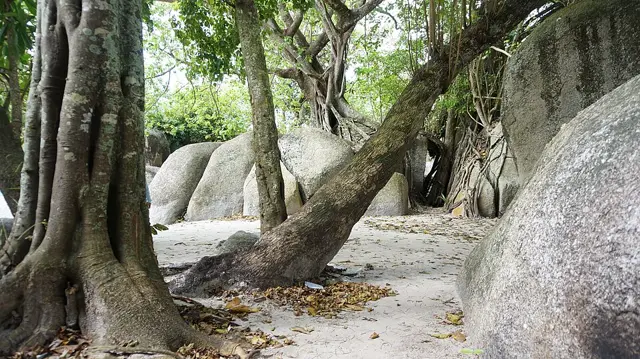 | Pantai Tanjung Tinggi.jpg | Ayufib | CC BY-SA 4.0 | Wikimedia Commons |
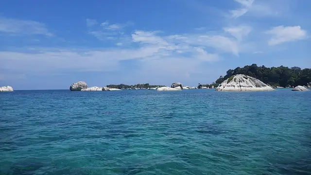 | Pantai Tanjung Kelayang 04.jpg | Raflinoer32 | CC BY-SA 4.0 | Wikimedia Commons |
 | Lengkuas Island Lighthouse.jpg | Othello95 | CC BY-SA 4.0 | Wikimedia Commons |
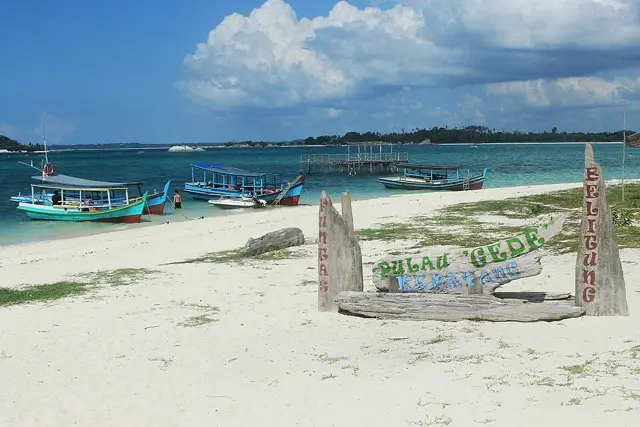 | Pulau Kepayang, Belitung.jpg | Stella Nostra G. A | CC BY-SA 4.0 | Wikimedia Commons |
 | Danau Kaolin Belitung.jpg | Ayufib | CC BY-SA 4.0 | Wikimedia Commons |
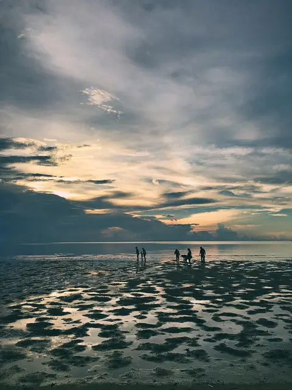 | Sunset Pantai Tanjung Pendam Belitung.jpg | Canisie | CC BY-SA 4.0 | Wikimedia Commons |
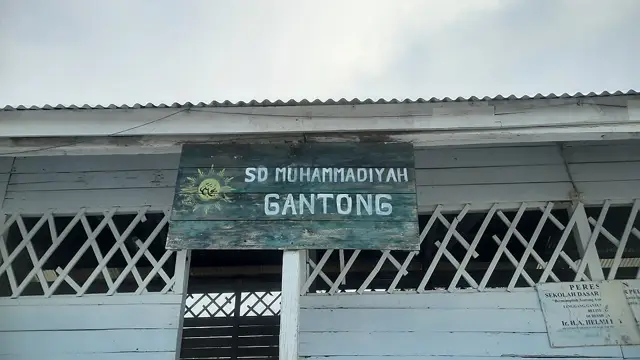 | SD Muhammadiyah Gantong Replika Sekolah Laskar Pelangi.jpg | Raflinoer32 | CC BY-SA 4.0 | Wikimedia Commons |
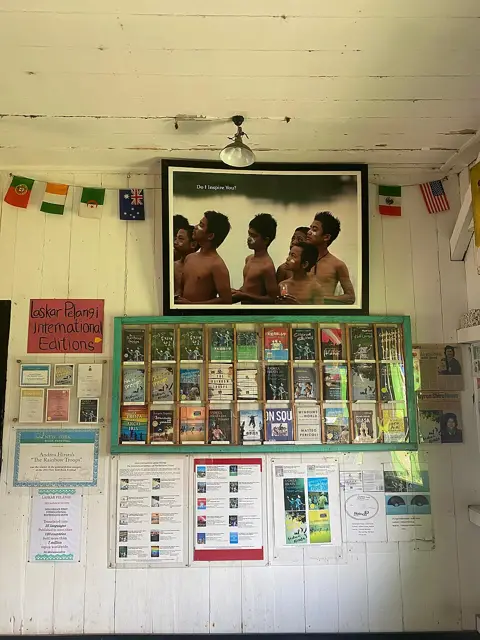 | Museum Kata Andrea Hirata.jpg | Haris Yunanda Rangkuti | CC BY-SA 4.0 | Wikimedia Commons |
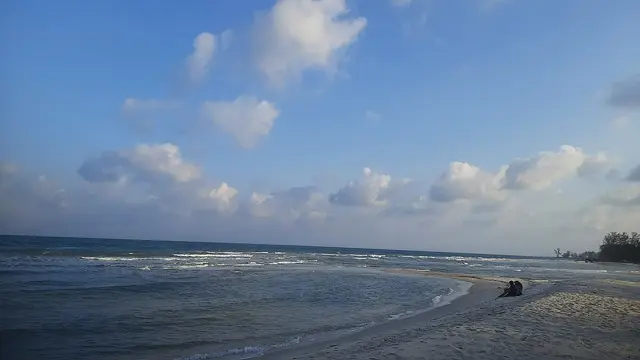 | Pantai Serdang Belitung Timur 05.jpg | Raflinoer32 | CC BY-SA 4.0 | Wikimedia Commons |
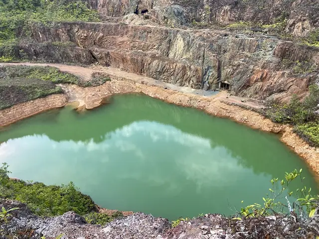 | Open Pit Namsalu Geosite.jpg | Haris Yunanda Rangkuti | CC BY-SA 4.0 | Wikimedia Commons |
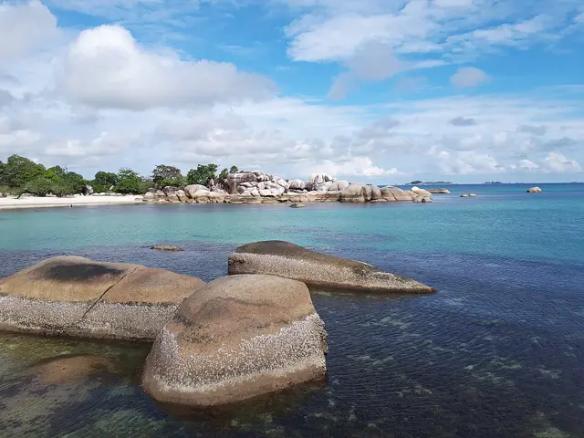 | Pantai Tanjung Tinggi, Belitung.jpg | brigitta | CC BY-SA 4.0 | Wikimedia Commons |
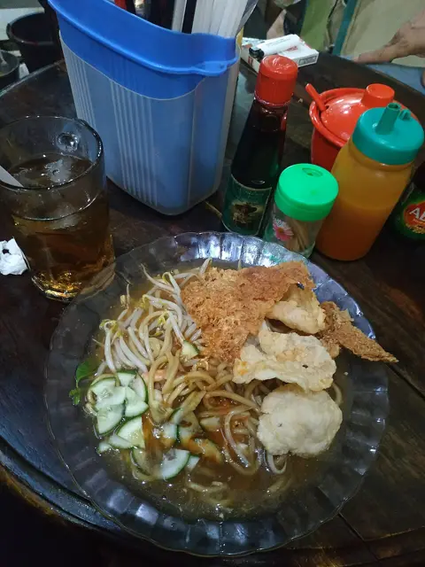 | Mie Belitung Mie Belitong Indonesian noodle.jpg | Bagus1911 | CC BY-SA 4.0 | Wikimedia Commons |
| Gangan Belitung Timur.jpg | Raflinoer32 | CC BY-SA 4.0 | Wikimedia Commons | |
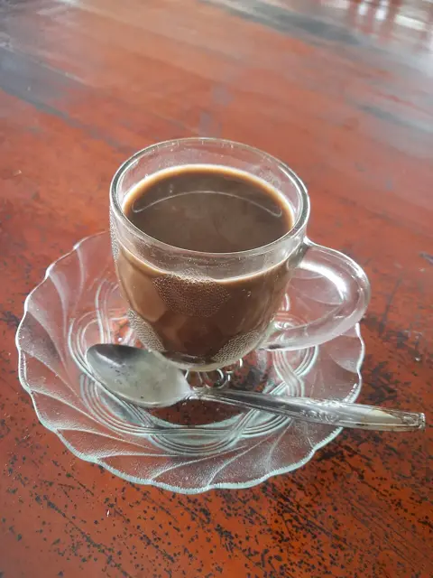 | Kopi Khas Belitung Timur.jpg | Raflinoer32 | CC BY-SA 4.0 | Wikimedia Commons |
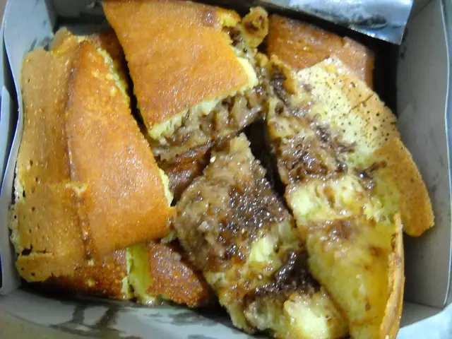 | Hoklopan-Martabak Bangka.JPG | Taman Renyah | CC BY 3.0 | Wikimedia Commons |
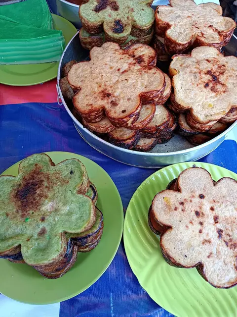 | Bingka.jpg | Wadaihangit | CC BY-SA 4.0 | Wikimedia Commons |
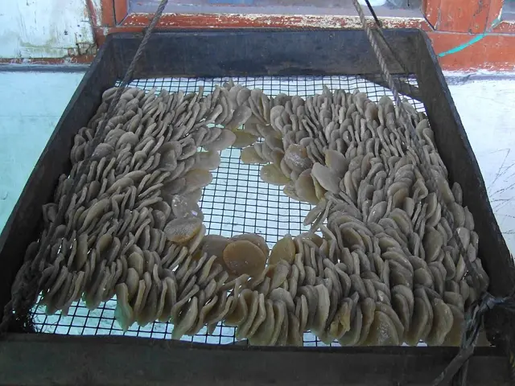 | Kerupuk kemplang raw.JPG | Sakurai Midori | CC BY-SA 3.0 | Wikimedia Commons |
| Sate Ikan.jpg | Aininapple | CC BY-SA 4.0 | Wikimedia Commons | |
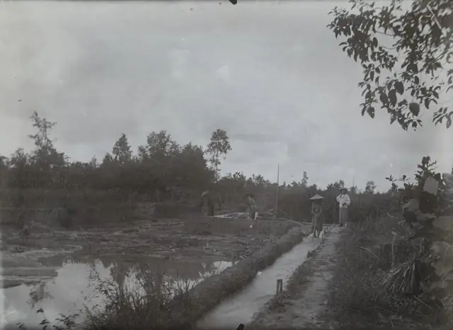 | Tinmijnen te Manggar op Biliton, KITLV 106607.tiff | AnonymousUnknown author | CC BY 4.0 | Wikimedia Commons |
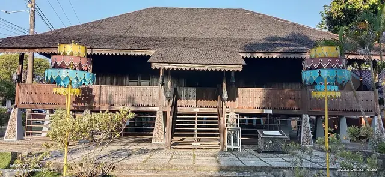 | Rumah Adat Belitung Negeri Laskar Pelangi.jpg | Virandy Putra | CC BY-SA 4.0 | Wikimedia Commons |
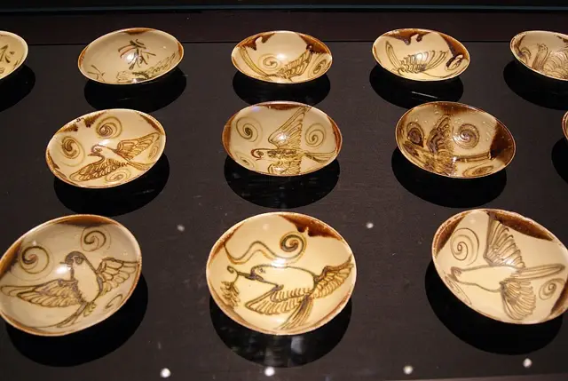 | Changsha bowls from the Belitung shipwreck, ArtScience Museum, Singapore - 20110618-01.jpg | Unknown authorUnknown author. | CC BY-SA 3.0 | Wikimedia Commons |
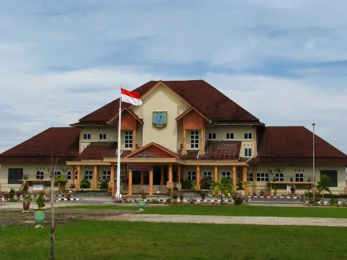 | Manggar camat office.jpg | id:user:Aryphrase | CC BY-SA 3.0 | Wikimedia Commons |
 | Lokasi Film Laskar Pelangi - Pantai Tanjung Tinggi.jpg | Raflinoer32 | CC BY-SA 4.0 | Wikimedia Commons |
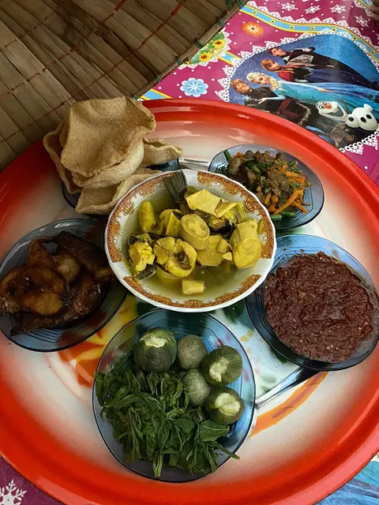 | Tradisi Makan Bedulang.jpg | Muhamad Akhirul Sidik | CC BY-SA 4.0 | Wikimedia Commons |
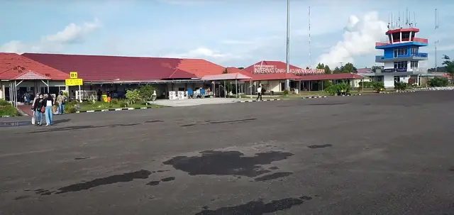 | H.A.S. Hanandjoeddin International Airport terminal.jpg | Directorate General of State Assets of the Indonesian Ministry of Finance | Public domain | Wikimedia Commons |
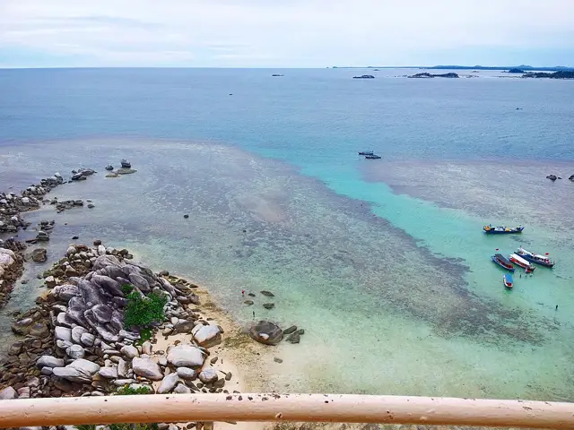 | Blue Sea from Lengkuas Island Lighthouse.jpg | Christine Anggeline | CC BY-SA 4.0 | Wikimedia Commons |
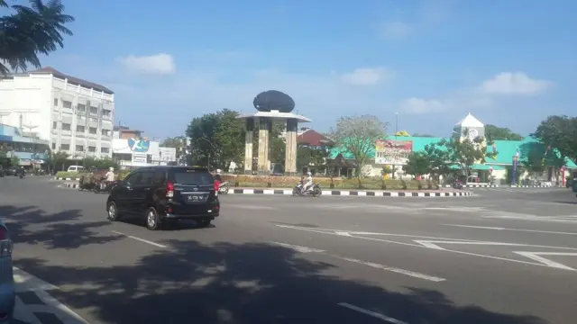 | Downtown Tanjung Pandan.jpg | Othello95 | CC BY-SA 4.0 | Wikimedia Commons |
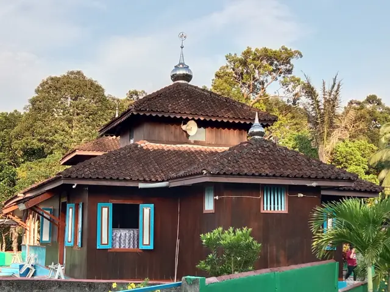 | Masjid Al Ikhlas, Sijuk, Belitung, Juni 2023.png | Virandy Putra | CC BY-SA 4.0 | Wikimedia Commons |
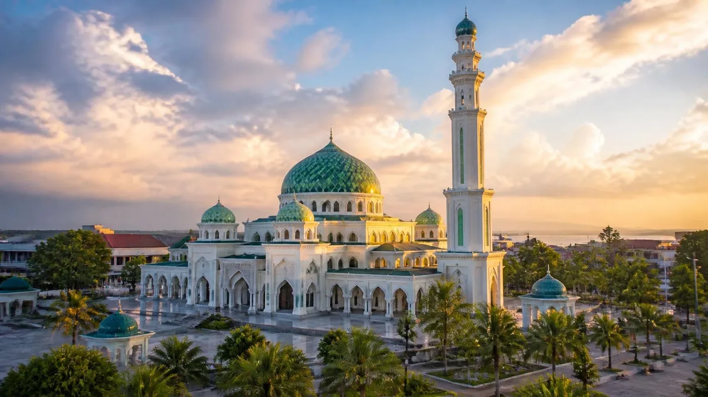 | Masjid Agung Al-Mabrur | Ilustrasi AI (Canva AI) | Ilustrasi AI, bukan foto asli | Canva |
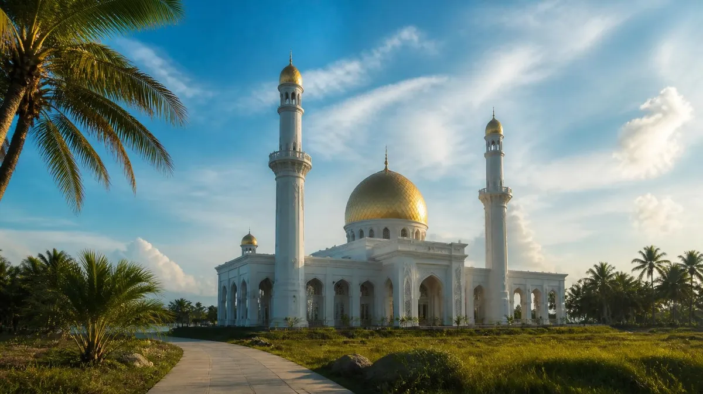 | Masjid Agung Darussalam Manggar | Ilustrasi AI (Canva AI) | Ilustrasi AI, bukan foto asli | Canva |
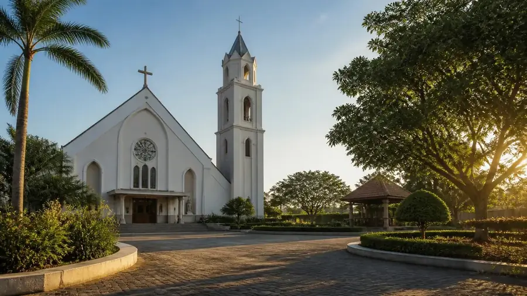 | Gereja Katolik Regina Pacis | Ilustrasi AI (Canva AI) | Ilustrasi AI, bukan foto asli | Canva |
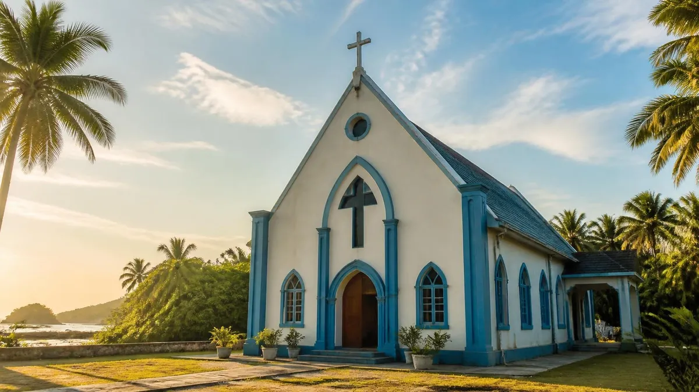 | Gereja Katolik Santo Yoseph Manggar | Ilustrasi AI (Canva AI) | Ilustrasi AI, bukan foto asli | Canva |
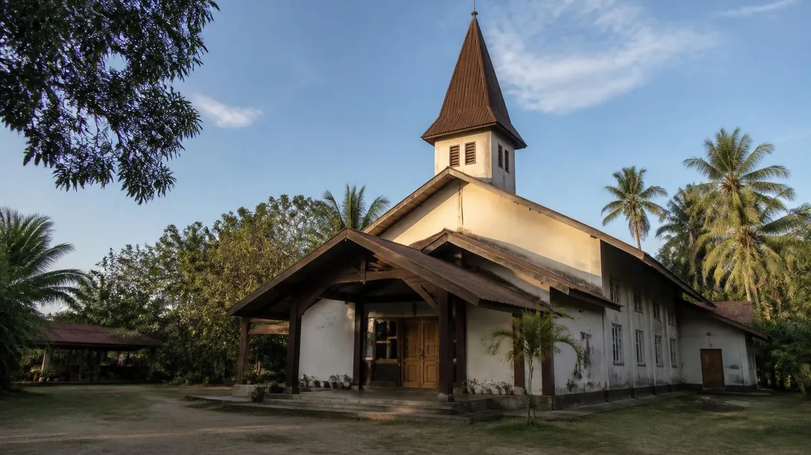 | Gereja Katolik Santo Paulus Gantung | Ilustrasi AI (Canva AI) | Ilustrasi AI, bukan foto asli | Canva |
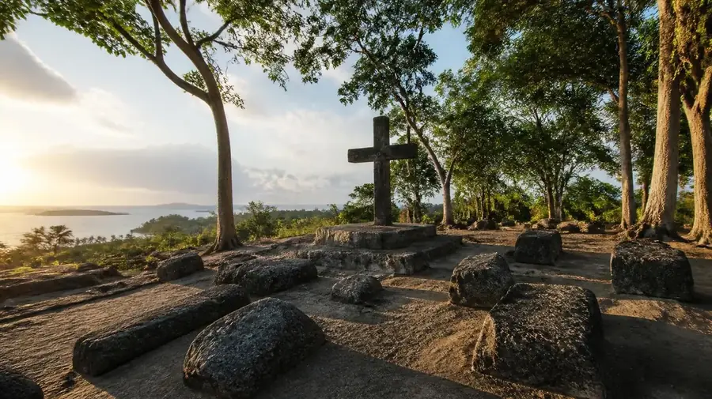 | Situs Gereja Katolik Pertama, Bukit Samak | Ilustrasi AI (Canva AI) | Ilustrasi AI, bukan foto asli | Canva |
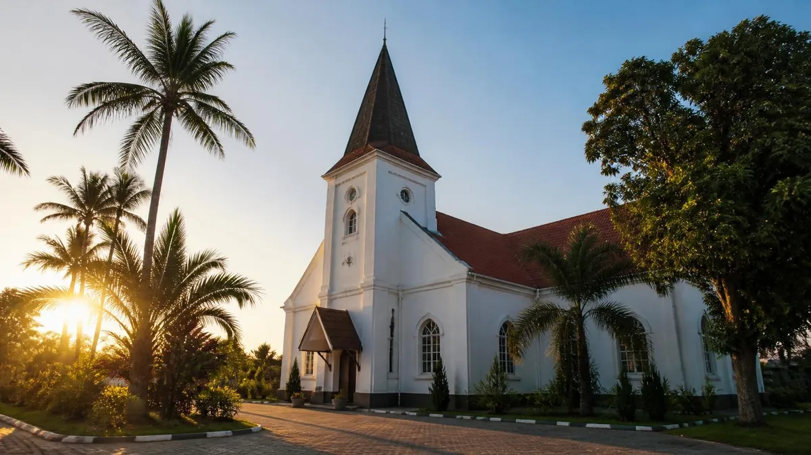 | GPIB Immanuel Tanjung Pandan | Ilustrasi AI (Canva AI) | Ilustrasi AI, bukan foto asli | Canva |
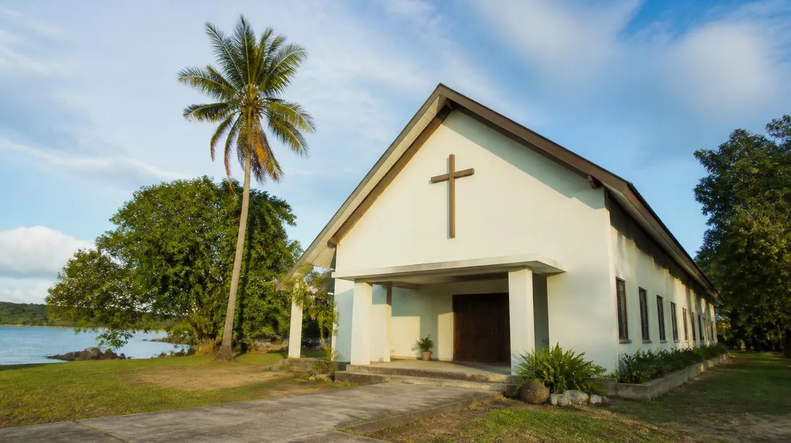 | GPIB Karunia Manggar | Ilustrasi AI (Canva AI) | Ilustrasi AI, bukan foto asli | Canva |
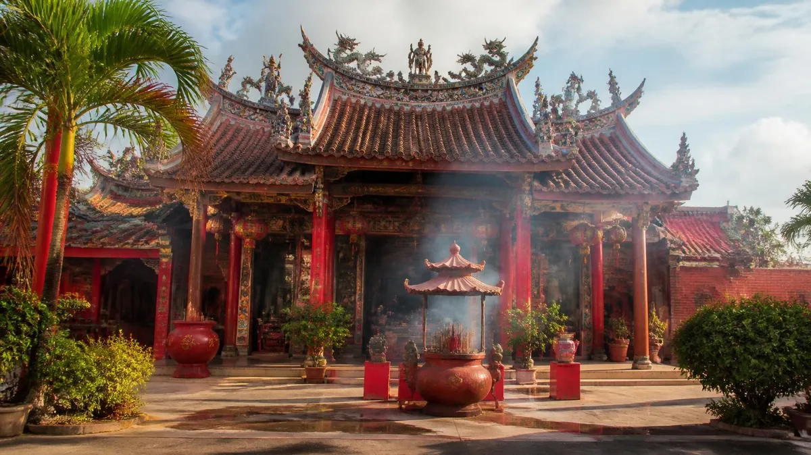 | Klenteng Hok Tek Che Tanjung Pandan | Ilustrasi AI (Canva AI) | Ilustrasi AI, bukan foto asli | Canva |
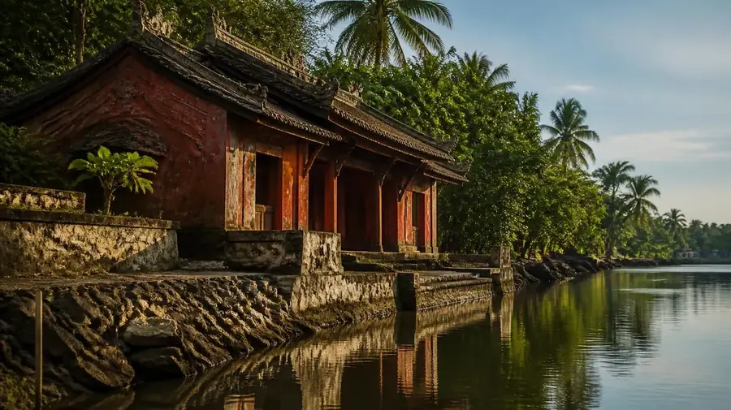 | Kelenteng Sijuk | Ilustrasi AI (Canva AI) | Ilustrasi AI, bukan foto asli | Canva |
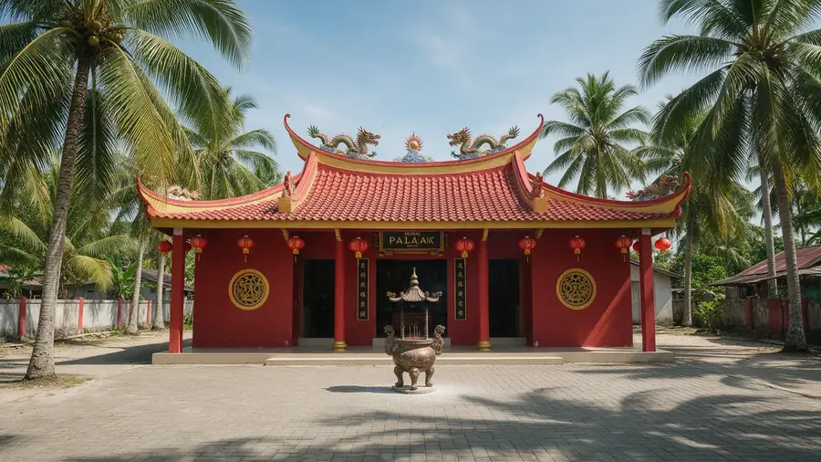 | Klenteng Than San Suhu Ahin | Ilustrasi AI (ElevenLabs, Seedream) | Ilustrasi AI, bukan foto asli | ElevenLabs |
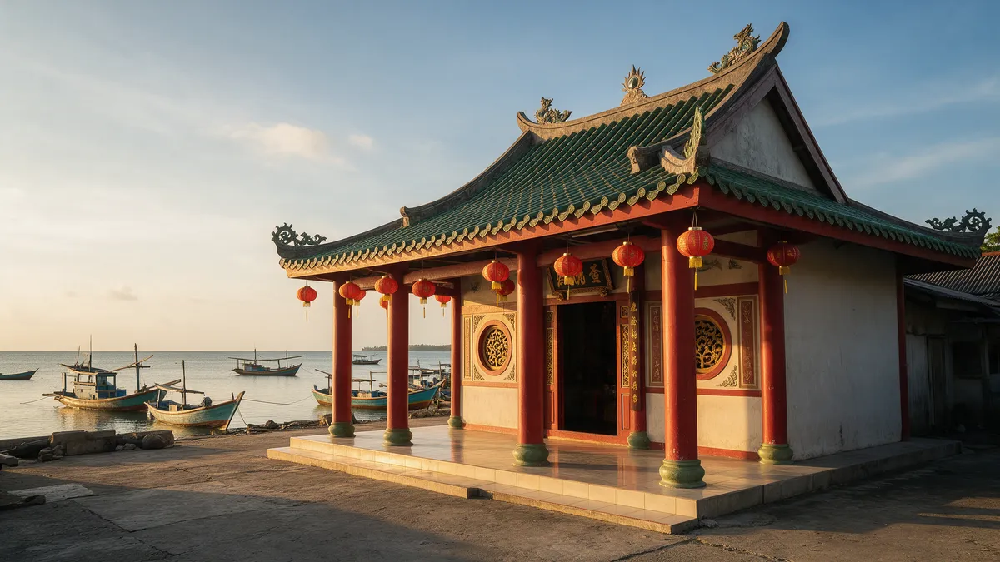 | Kelenteng Fuk Tet Tje (Dharma Suci) Manggar | Ilustrasi AI (ElevenLabs, Seedream) | Ilustrasi AI, bukan foto asli | ElevenLabs |
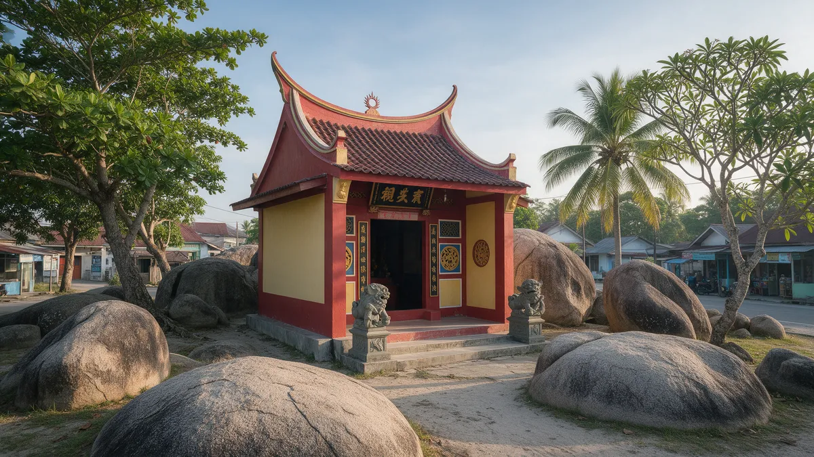 | Kelenteng Sun Lie San Gantung | Ilustrasi AI (ElevenLabs, Seedream) | Ilustrasi AI, bukan foto asli | ElevenLabs |
Gambar lain
Gambar bertanda Ilustrasi AI dibuat khusus untuk iTAP Belitung dengan AI generatif (ElevenLabs: Batu Baginda, Batu Mentas, Dukun Kampong; Canva AI: Batu Berlayar, Pulau Burung, Bukit Peramun, Kampung Ahok/Gantong, Vihara Dewi Kwan Im, Kerajaan Balok, Museum Tanjung Pandan, Maras Taun, Buang Jong, Campak, Bahasa Melayu Belitung, Transportasi, Kapal laut, Rumah sakit) dan bukan foto lokasi asli. Sampul produk & foto kedai milik iTAP. Ikon logo © iTAP Belitung. Kartu bertanda “Foto menyusul” belum punya foto berlisensi bebas yang cocok. Musik latar: komposisi orisinal yang dibuat dengan ElevenLabs Music untuk iTAP Belitung.
Sumber nomor darurat (dicek 20 Okt 2026)
- PSC 119 Belitung 0817-4119-119 — portal.belitung.go.id
- RSUD dr. H. Marsidi Judono (0719) 21071 / IGD 22190 — data.belitung.go.id
- BPBD Belitung TRC (0719) 9303403 & Damkar (0719) 22113 — bpbd.belitung.go.id, data.belitung.go.id
- SPKT Polres Belitung Timur 0859-7544-3119 — beltim.babel.polri.go.id
- RSUD Muhammad Zein (0719) 91738 — rsud.beltim.go.id
- BPBD Belitung Timur darurat 0811-7383-112 — ppid.beltim.go.id; kantor (0719) 21001 — bpbd.beltim.go.id
Sumber tempat ibadah (dicek 20 Okt 2026)
- Masjid Agung Al-Mabrur — Posbelitung
- Masjid Al-Ikhlas Sijuk & Kelenteng Sijuk — dispar.belitung.go.id, Kompas
- Masjid Agung Darussalam Manggar — ANTARA, Kemenpar
- Gereja Regina Pacis — Keuskupan Pangkalpinang
- St. Yoseph Manggar, St. Paulus Gantung, situs Bukit Samak — Kanwil Kemenag Babel
- GPIB Immanuel & GPIB Karunia — Direktori GPIB
- Klenteng Hok Tek Che — DKPUS Babel
- Klenteng Than San Suhu Ahin — BelitungTimes
- Kelenteng Fuk Tet Tje Manggar & Sun Lie San Gantung — Bimas Khonghucu Kemenag Babel
Kartu tempat ibadah tanpa foto memakai ikon kategori (bukan foto tempat tersebut).